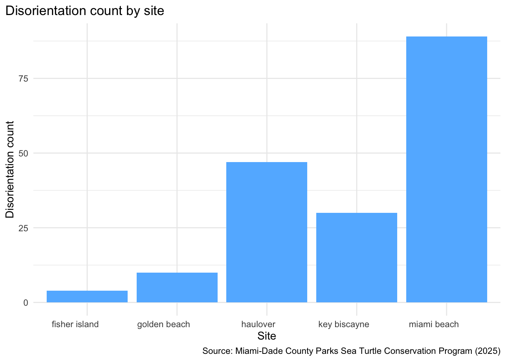

A description of EVR628 data visualization project
Author
Jeynaliz Ortiz Gonzalez
Introduction
This project contains data relevant to sea turtle hatchling disorientations at the moment of emergence for the 2025 year. Data showcases all disorientations in beaches located within 5 sites: Key Biscayne, Fisher Island, Miami Beach, Haulover, and Golden Beach.
Objective(s)
Data sources
The data used in this project has been collected by authorized sea turtle personnel (permit MTP 150) from the Miami-Dade County Parks Sea Turtle Conservation Program. This singular dataset pertains to all nest hatches across multiple survey areas during the 2025 nesting season.
#Addressing a GPS error in the dataset at the moment of export#Manually substituting correct value with base R function.dis2025[139, "latitude"] <-25.8382267#Change the latitude and longitude to a consistent number of decimal points.#This has been applied because methods include two different GPS systems:#Trimble and Google Earth, which both yield differing decimal points.#Need to convert to character function to be able to round.latmin_decimals <- dis2025 |>mutate(dec =nchar(sub("^[^.]*\\.?","", as.character(latitude)))) |>summarize(min(dec, na.rm =TRUE)) |>pull()lonmin_decimals <- dis2025 |>mutate(dec =nchar(sub("^[^.]*\\.?","", as.character(longitude)))) |>summarize(min(dec, na.rm =TRUE)) |>pull()#Converting back to numeric function to be able to complete mathematical function.dis2025 <- dis2025 %>%mutate(latitude =as.numeric(latitude),longitude =as.numeric(longitude)) |>mutate(latitude =round(latitude, latmin_decimals),longitude =round(longitude, lonmin_decimals))#Inspect data table to confirm code has worked.# Filter out the NA's in the nest column (That means that these disorientations#were not from hatches but from adult nesters, therefore irrelevant to our#current question.)dis2025 <- dis2025 |>filter(!is.na(nest))# Create a new column for sitesdis2025 <- dis2025 %>%mutate(sites =case_when(str_detect(nest, "^KB-N") ~"key biscayne",str_detect(nest, "^HO-N") ~"haulover",str_detect(nest, "^FI-N") ~"fisher island",str_detect(nest, "^MB-N") ~"miami beach",str_detect(nest, "^GB-N") ~"golden beach",str_detect(nest, "MNGB") ~"golden beach",str_detect(nest, "MNMB") ~"miami beach",str_detect(nest, "MNKB") ~"key biscayne",str_detect(nest, "C0") ~"miami beach",TRUE~NA_character_))#Manually correcting a date mistake on the date column, row 66dis2025[66, "date"] <-"6/30/2025"# Step 2: convert my date column into an actual date object, overwritedis2025 <- dis2025 |>mutate(date =mdy(date))#Export clean data filewrite_rds(x = dis2025,file ="data/processed/disorientations2025_clean.rds")
# A tibble: 5 × 2
sites nests
<chr> <int>
1 fisher island 4
2 golden beach 10
3 haulover 47
4 key biscayne 30
5 miami beach 89
dis_per_site_plot <-ggplot(data = dis_per_site,aes(x = sites,y = nests)) +geom_col(fill ="steelblue1") +labs(title ="Disorientation count by site",x ="Site",y ="Disorientation count",fill ="Nest count",caption ="Source: Miami-Dade County Parks Sea Turtle Conservation Program (2025)") +theme_minimal() +theme(plot.title.position ="plot",axis.text.x =element_text(angle =0, hjust =0.75))dis_per_site_plot
Ignoring unknown labels:
• fill : "Nest count"

#Creating a heat map that demonstrates nest per site while simultaneously comparing#sea turtle species. Find original species_dispersite on Analysis.R file.species_summary <- dis2025_clean |>group_by(sites, species) |>summarize(nests =n_distinct(nest), .groups ="drop")species_summary
Florida Department of Transportation. (2019). Detailed Florida state boundary. Retrieved December 2, 2025 from
https://gis-fdot.opendata.arcgis.com/datasets/fdot::detailed-florida-state-boundary/about
H. Wickham. ggplot2: Elegant Graphics for Data Analysis. Springer-Verlag New York, 2016.
Pebesma, E., & Bivand, R. (2023). Spatial Data Science: With Applications in R. Chapman and Hall/CRC. https://doi.org/10.1201/9780429459016
Pebesma, E. (2018). Simple Features for R: Standardized Support for Spatial Vector Data. The R Journal 10 (1), 439-446. https://doi.org/10.32614/RJ-2018-009
R Core Team (2025). R: A Language and Environment for Statistical Computing. R Foundation for Statistical Computing, Vienna, Austria. https://www.R-project.org/.